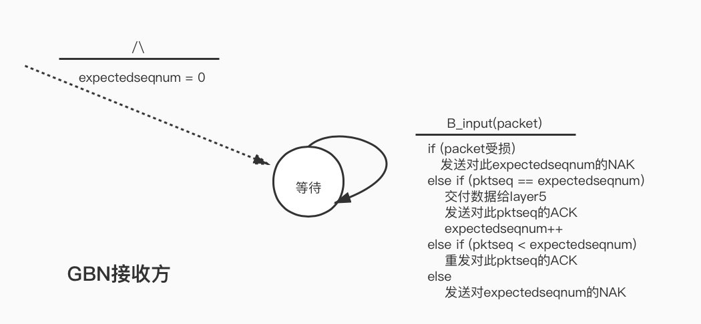
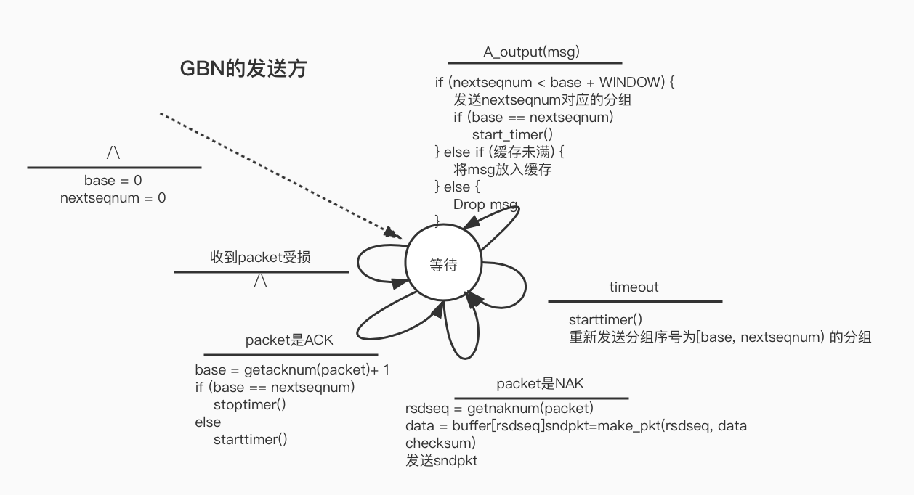

Computer Networking - 可靠数据传输协议
《计算机网络 自顶向下方法》配套实验
实现一个可靠数据传输协议（reliable data transfer protocol)，实验链接
一、比特交换协议
基于停止等待的理论，使用校验和、序号、肯定否定ACK、重传和定时器的技术，实现一个在不可靠网络上的单项数据传输的可靠协议。
停止等待：发送方在发送了一个数据包（分组）后等待接收方的回应，在此期间不发送任何数据。
序号：为了使接收方知道发送方是否在重传前一个发送分组（接收到的分组序号与最近收到的分组序号相同），在停止等待协议中，使用1比特的序号即可。
否定ACK：对上次正确接收的分组发送一个ACK（冗余ACK），即可实现否定ACK。
定时器：如果当前发送完分组后在一定时间内没有收到对应的ACK，那么进行重传。
实验框架
实验网络环境为模拟环境，分为3部分。layer5代表应用层，layer4是我们要实现的可靠数据传输层，layer3是不可靠的传输媒介。实验中实现的是单向的数据传输（A发送，B接收）
参考课本上图3-15 的发送方状态转移图和 3-14的接收方状态转移图。
应用层会调用A_outout(msg)向B发送数据，A需要构建发送分组，开启定时器。
A_input（pkt）函数用于从layer3中接收B发来的ACK信息，进行处理，判断ACK的类型和数据包是否受损。
A_timerinterrupt() 函数用于处理当前发送的分组超时后的重传。
B_input（pkt）函数从layer3中接收A发送的数据，进行处理（发送给数据接收的应用层layer5）并进行回复。
接收方和发送方的状态记录结构以及相应初始化：
const int WCALL = 0, WACK = 1;
typedef struct astate{
int state; // 当前处于等待调用 或 等待ack的状态
int curseq;
int checksum;
char data[20];
}AState;
const int WZERO = 0, WONE = 1;
typedef struct bstate{
int state;
}BState;
AState A_State;
BState B_State;
void A_init()
{
A_State.checksum = 0;
A_State.state = WCALL;
A_State.curseq = 0;
}
void B_init()
{
B_State.state = WZERO;
}
A_output
float timer_increment = 50;
int compute_pkt_sum(struct pkt packet) {
int sum = 0;
for (int i = 0; i < 20; i++ ) {
sum += packet.payload[i];
}
sum += packet.acknum;
sum += packet.seqnum;
return sum;
}
/* called from layer 5, passed the data to be sent to other side */
void A_output(message)
struct msg message;
{
if (A_State.state == WCALL) {
struct pkt pkt_to_send = {.acknum = A_State.curseq,
.seqnum = A_State.curseq};
for (int i = 0; i < 20; i++) {
char d = message.data[i];
pkt_to_send.payload[i] = d;
A_State.data[i] = d;
}
pkt_to_send.checksum = compute_pkt_sum(pkt_to_send);
A_State.state = WACK;
starttimer(A, timer_increment);
tolayer3(A, pkt_to_send);
if (TRACE > 2) {
printf("A: Being called.\n");
}
} else {
ADropped_msg++;
if (TRACE > 2) {
printf("A: Drop Message.\n");
}
}
}
A_input
/* called from layer 3, when a packet arrives for layer 4 */
void A_input(packet)
struct pkt packet;
{
if (A_State.state == WACK) {
if (packet.acknum == A_State.curseq && packet.checksum == compute_pkt_sum(packet)) {
if (TRACE > 2) {
printf("A: valid ACK.\n");
}
stoptimer(A);
A_State.curseq = !A_State.curseq;
A_State.checksum = 0;
A_State.state = WCALL;
ACKed_msg++;
} else {
printf("A: Invalid checksum or pktACK %d != curseq %d\n", packet.acknum, A_State.curseq);
}
} else {
if (TRACE > 2) {
printf("A: Invalid ACK.\n");
}
}
}
B_input
void B_input(packet)
struct pkt packet;
{
struct pkt response;
for (int i = 0; i < 20; ++i) {
response.payload[i] = 0;
}
if (packet.seqnum == B_State.state && packet.checksum == compute_pkt_sum(packet)) {
if (TRACE > 2) {
printf("B: Receive valid data. ACK%d\n", B_State.state);
}
tolayer5(B, packet.payload);
response.acknum = B_State.state;
response.seqnum = B_State.state;
response.checksum = compute_pkt_sum(response);
tolayer3(B, response);
B_State.state = !B_State.state;
} else {
if (TRACE > 2) {
printf("B: Resend ACK%d.\n", !B_State.state);
}
BACK_resend++;
// 冗余ack
response.acknum = !B_State.state;
response.seqnum = !B_State.state;
response.checksum = compute_pkt_sum(response);
tolayer3(B, response);
}
}
A_timerinterrupt
void A_timerinterrupt()
{
if (TRACE > 2) {
printf("A: time out, resend packet.\n");
}
AResend_msg++;
// resend packet
struct pkt packet = {.acknum = A_State.curseq, .checksum = A_State.checksum, .seqnum = A_State.curseq};
for (int i = 0; i < 20; i++) {
packet.payload[i] = A_State.data[i];
}
tolayer3(A, packet);
starttimer(A, timer_increment);
}
测试
使用的超时间隔是50，应用发来数据包的间隔是100。原程序中我还增加了一些记录用的变量，统计丢包率之类的。没有丢包受损的情况下，一次收发在TRACE=3的debug输出为：
EVENT time: 69.657104, type: 1, fromlayer5 entity: 0
GENERATE NEXT ARRIVAL: creating new arrival
INSERTEVENT: time is 69.657104
INSERTEVENT: future time will be 196.618607
MAINLOOP: data given to student: aaaaaaaaaaaaaaaaaaaa
START TIMER: starting timer at 69.657104
INSERTEVENT: time is 69.657104
INSERTEVENT: future time will be 119.657104
TOLAYER3: seq: 0, ack 0, check: 1940 aaaaaaaaaaaaaaaaaaaa
TOLAYER3: scheduling arrival on other side
INSERTEVENT: time is 69.657104
INSERTEVENT: future time will be 75.066002
A: Being called.
EVENT time: 75.066002, type: 2, fromlayer3 entity: 1
B: Receive valid data. ACK0
TOLAYER5: data received: aaaaaaaaaaaaaaaaaaaa
TOLAYER3: seq: 0, ack 0, check: 0
TOLAYER3: scheduling arrival on other side
INSERTEVENT: time is 75.066002
INSERTEVENT: future time will be 79.824150
EVENT time: 79.824150, type: 2, fromlayer3 entity: 0
A: valid ACK.
STOP TIMER: stopping timer at 79.824150
丢包重传的情况：
EVENT time: 286.424072, type: 1, fromlayer5 entity: 0
GENERATE NEXT ARRIVAL: creating new arrival
INSERTEVENT: time is 286.424072
INSERTEVENT: future time will be 289.861755
MAINLOOP: data given to student: cccccccccccccccccccc
START TIMER: starting timer at 286.424072
INSERTEVENT: time is 286.424072
INSERTEVENT: future time will be 336.424072
TOLAYER3: seq: 0, ack 0, check: 1980 cccccccccccccccccccc
TOLAYER3: scheduling arrival on other side
INSERTEVENT: time is 286.424072
INSERTEVENT: future time will be 293.377441
A: Being called.
EVENT time: 289.861755, type: 1, fromlayer5 entity: 0
GENERATE NEXT ARRIVAL: creating new arrival
INSERTEVENT: time is 289.861755
INSERTEVENT: future time will be 483.757172
MAINLOOP: data given to student: dddddddddddddddddddd
A: Drop Message.
EVENT time: 293.377441, type: 2, fromlayer3 entity: 1
B: Receive valid data. ACK0
TOLAYER5: data received: cccccccccccccccccccc
TOLAYER3: packet being lost
EVENT time: 336.424072, type: 0, timerinterrupt entity: 0
A: time out, resend packet.
TOLAYER3: seq: 0, ack 0, check: 0 cccccccccccccccccccc
TOLAYER3: scheduling arrival on other side
INSERTEVENT: time is 336.424072
INSERTEVENT: future time will be 343.941284
START TIMER: starting timer at 336.424072
INSERTEVENT: time is 336.424072
INSERTEVENT: future time will be 386.424072
EVENT time: 343.941284, type: 2, fromlayer3 entity: 1
B: Resend ACK0.
TOLAYER3: seq: 0, ack 0, check: 0
TOLAYER3: scheduling arrival on other side
INSERTEVENT: time is 343.941284
INSERTEVENT: future time will be 350.816040
EVENT time: 350.816040, type: 2, fromlayer3 entity: 0
A: valid ACK.
STOP TIMER: stopping timer at 350.816040
二、Go-back-N
画了接收方和发送方的有限状态机。


实现
相比比特交换协议，接收方的增加了对收到msg的缓存，这边我使用了一个循环数组来实现缓存，base、nextseqnum、tail指针将缓存分为了四个部分：已发送且收到确认的msg [0, base)，已发送但未收到确认的msg [base, nextseqnum)，窗口中等待发送的msg [nextseqnum, min(tail, base+WINDOW) ), 缓存的msg [base，tail]。
#define MAXBUFFER 50
#define WINDOW 8
typedef struct astate{
int base;
int nextseqnum;
char buffer[MAXBUFFER][20];
int tail;
int buf_size;
}AState;
int insert_tail(AState* astate, char* data) {
if (astate->buf_size == MAXBUFFER) {
return 0;
}
for (int i = 0; i < 20; ++i) {
astate->buffer[astate->tail][i] = data[i];
}
astate->tail = (astate->tail + 1) % MAXBUFFER;
astate->buf_size++;
return 1;
}
typedef struct bstate{
int expectedseqnum;
}BState;
具体实现时注意缓存是循环使用的，使用buf_size记录已经缓存的数据量，完整代码链接
测试
设置的超时为100，消息间隔为50，丢包率为0.1，受损率为0.1，总共发送10个消息，TRACE=2。
正常收发
EVENT time: 34.828552, type: 1, fromlayer5 entity: 0
A: Got Message ,window [0, 0)
EVENT time: 40.237450, type: 2, fromlayer3 entity: 1
B: ACK 0
EVENT time: 44.995598, type: 2, fromlayer3 entity: 0
A: Receive valid ACK, window updated:[1, 1)
EVENT time: 98.309303, type: 1, fromlayer5 entity: 0
A: Got Message ,window [1, 1)
EVENT time: 107.837433, type: 2, fromlayer3 entity: 1
B: ACK 1
EVENT time: 117.540672, type: 2, fromlayer3 entity: 0
A: Receive valid ACK, window updated:[2, 2)
丢包
A: Got Message ,window [2, 2)
EVENT time: 153.000458, type: 2, fromlayer3 entity: 1
B: ACK 2
TOLAYER3: packet being lost
EVENT time: 238.246262, type: 1, fromlayer5 entity: 0
A: Got Message ,window [2, 3)
EVENT time: 243.212036, type: 0, timerinterrupt entity: 0
A: time out. Go back N.[2, 4)
A: Resend seq 2
TOLAYER3: packet being lost
A: Resend seq 3
EVENT time: 244.415878, type: 2, fromlayer3 entity: 1
B: ACK 3
EVENT time: 251.290649, type: 2, fromlayer3 entity: 0
A: Receive valid ACK, window updated:[4, 4)
重传
A: time out. Go back N.[4, 6)
A: Resend seq 4
A: Resend seq 5
EVENT time: 426.913330, type: 2, fromlayer3 entity: 1
B: ACK 5
TOLAYER3: packet being corrupted
EVENT time: 430.196320, type: 2, fromlayer3 entity: 1
B: resend ACK 4
EVENT time: 432.601593, type: 2, fromlayer3 entity: 1
B: resend ACK 5
TOLAYER3: packet being lost
EVENT time: 433.927460, type: 2, fromlayer3 entity: 0
A: Invalid packet data.
EVENT time: 441.234406, type: 2, fromlayer3 entity: 0
Warning: attempt to start a timer that is already started
A: Receive valid ACK, window updated:[5, 6)